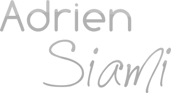

Profil
- Développeur Web & Logiciel
- Étudiant en 3ème année à Epitech, Assistant pédagogique Epitech et Sup'internet, Lead developer chez WizVille
- 20 Ans - 15 / 11 / 1991
- Permis de Conduire (Permis B)
- En 5 mots : Autonome, Passionné, Flexible, Autodidacte, Ambitieux
- Anglais: Courant, TOEIC officiel : 905 / 990, TOEFL IBT Officiel : 101 / 120
Compétences Techniques
- Ruby On Rails
- PHP
- Zend
- Symfony
- CakePhP
- Intégration xHTML / CSS
- Javascript / JQuery
- mySQL / Sqlite
- C / C++
- Linux (Fedora, Ubuntu , Debian ) - Administration système
- Utilisation et configuration de serveurs type Apache, Nginx, Passenger, Thin, etc
- Versionnement : Bonnes connaissances Git / SVN et des méthodes agiles
- Bases en réseau : Wireshark, nmap, netcat, sockets
- Notions en sécurité web et réseaux
Expériences Professionnelles
- Lead developer Ruby on Rails pour WizVille de Juillet 2011 à ce jour
- Assistant pédagogique (Astek) à Epitech et Sup'internet - De mars 2011 à ce jour
- Développement Ruby on Rails et Zend chez Entropic Synergies - 1/07/2010 au 31/12/2010
- Création de boutiques en lignes avec Prestashop, ainsi que de modules additionnels - Début 2010
- Projets Epitech principaux : Shell complet, Client / Serveur IRC / FTP, Bomberman en 3D, Client / Server Voip, Serveur HTTP